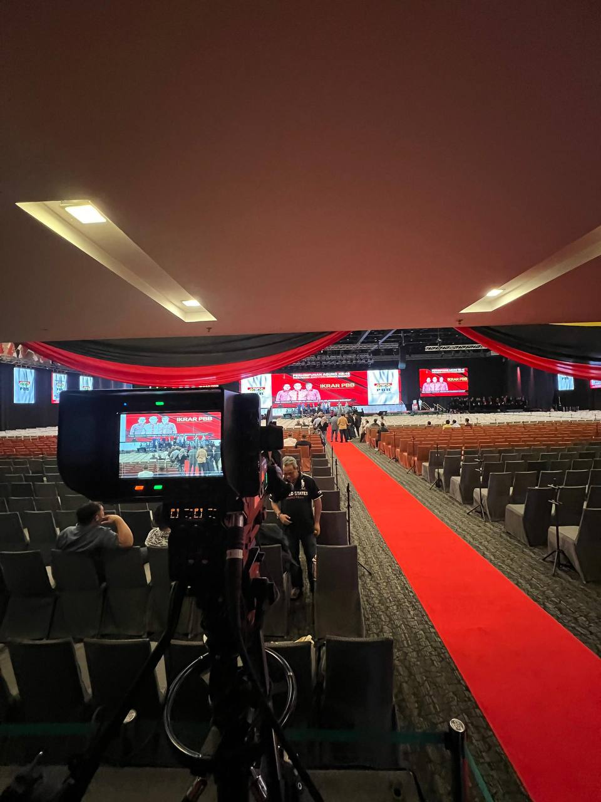
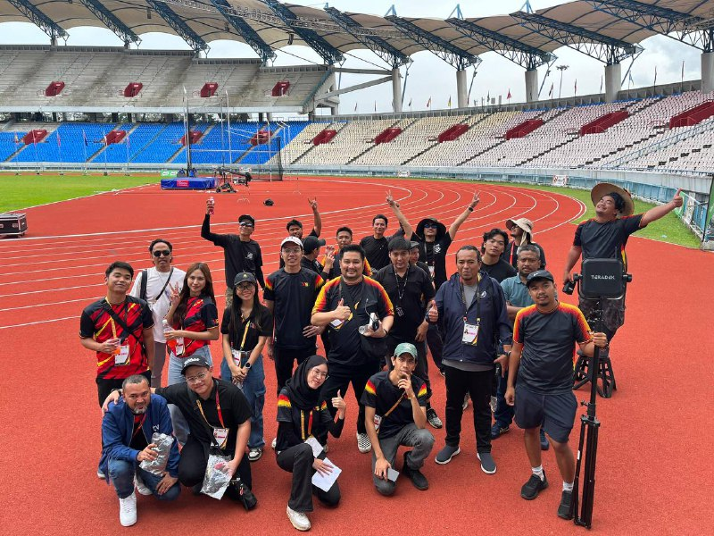
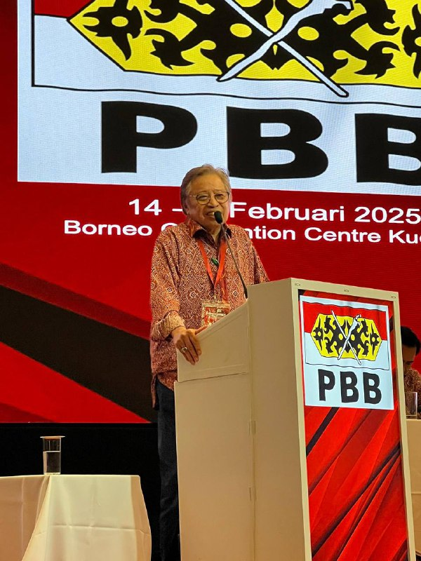

Ariel worked as a cameraman for Echo Vendor, a segment under the Sarawak-based television station TVS. He was trusted with filming key interviews and event coverage.
Ariel was part of the official media team for both SUKMA and PARASUKMA 2024. He documented athlete moments, competitions, and behind-the-scenes stories through his lenses.
He captured beautiful moments during the Maulidur Rasul celebration, preserving the event’s spiritual and cultural significance through both video and photography.
Ariel contributed as an event photographer and videographer for one of Borneo's biggest music festivals. He shot live performances, crowd moments, and backstage scenes.
As a trusted media talent, Ariel was given the role of official photographer and videographer for Parti Pesaka Bumiputera Bersatu (PBB), covering their political events and gatherings.
